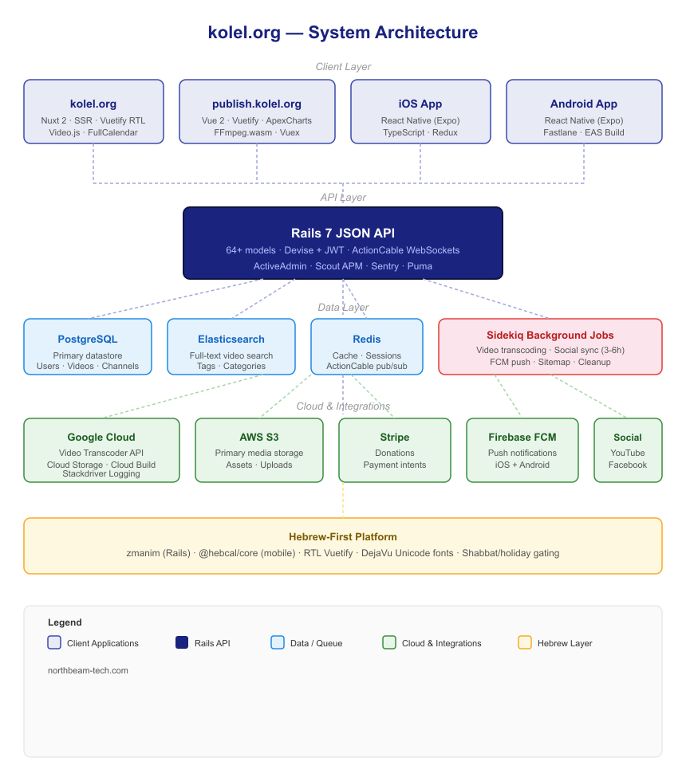
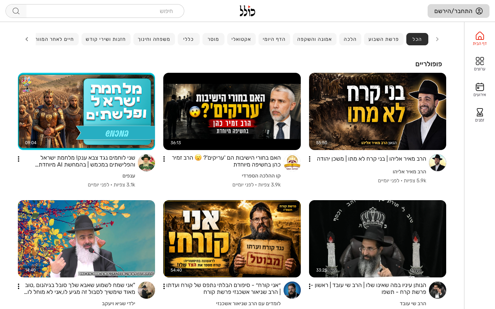
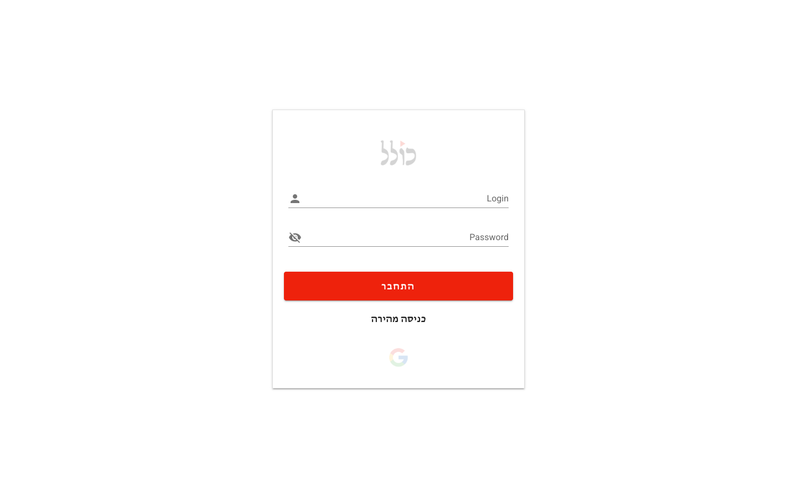
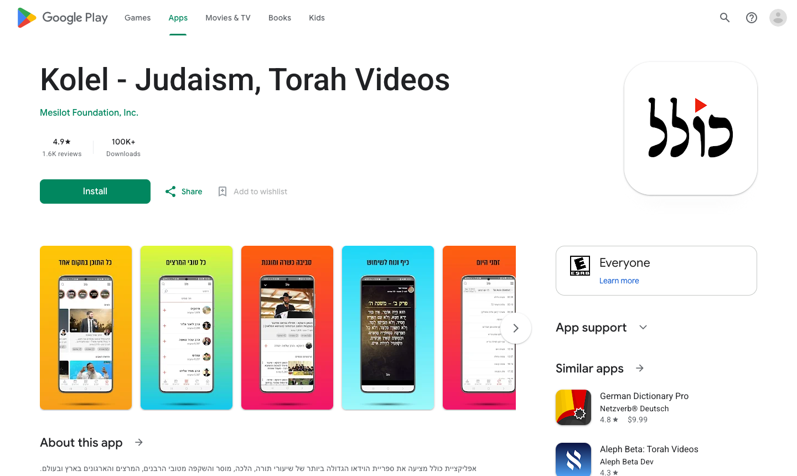

kolel.org — Multi-Platform Jewish Video Streaming Platform with Creator Dashboard & Mobile Apps
A production video streaming platform built entirely from scratch — Rails 7 API, Nuxt SSR web, Vue creator dashboard, and React Native iOS/Android apps serving the global Jewish community.
Live at kolel.orgAbout the Project
Kolel is a content platform for the Jewish community where educators, rabbis, and organizations publish video lessons, shiurim, events, and live content to a global audience. The platform needed to serve both consumers (browse, watch, download, donate) and creators (upload, manage, analyze) across web and mobile — all with first-class Hebrew RTL support and Jewish calendar awareness.
We built the entire platform from the ground up: a Rails 7 JSON API, a Nuxt 2 SSR public website, a Vue 2 creator dashboard at publish.kolel.org, and a React Native app for iOS and Android. The backend integrates Google Cloud for video transcoding, Elasticsearch for search, Sidekiq for background processing, Stripe for donations, and Firebase for push notifications.
System Architecture

Client Applications
Web — kolel.org (Nuxt 2 + Vuetify)

The public website is a Nuxt 2 universal app with server-side rendering for SEO and fast first load. It supports full Hebrew RTL layout via Vuetify's RTL mode, Video.js for adaptive streaming playback, FullCalendar for event discovery with Hebrew date support, and social OAuth login via Google and Facebook. All pages are tracked with Google Analytics and Facebook Pixel.
Creator Dashboard — publish.kolel.org (Vue 2 + FFmpeg.wasm)

Creators manage their channels, upload videos, track analytics, and build playlists from a dedicated Vue 2 dashboard. One of the most technically interesting decisions here is running FFmpeg inside the browser via WebAssembly: videos are transcoded client-side before upload, reducing server compute costs significantly. ApexCharts power the analytics views with per-video engagement metrics.
Mobile — iOS & Android (React Native + Expo)


The mobile app is built in React Native with Expo and TypeScript, targeting both iOS and Android from a single codebase.
It supports offline video downloads, background audio playback for lessons via react-native-track-player, push notifications via Firebase and Notifee, native social login (Apple, Google, Facebook), and a Gifted Chat powered messaging interface.
The app ships via EAS build with Fastlane automating the App Store and Play Store releases.
Video Pipeline
Video processing is a multi-step pipeline. Creators upload a source file from the dashboard (optionally pre-transcoded client-side with FFmpeg.wasm), which is stored in Google Cloud Storage. A Sidekiq background job then triggers the Google Cloud Video Transcoder API to produce adaptive bitrate streams. The Rails API exposes signed URLs; both the web player (Video.js) and the mobile player consume the HLS output. Processed videos are also synced to YouTube and Facebook via scheduled Sidekiq jobs (every 3–6 hours).
Search & Discovery
Video search is powered by Elasticsearch, indexed via the elasticsearch-model Rails gem.
The public site combines Elasticsearch full-text search with PostgreSQL filters for category, tag, channel, and language.
PgSearch provides secondary full-text search for admin queries.
The mobile app adds a Fuse.js powered local fuzzy search layer for recently viewed content.
Hebrew Calendar & Community Features
The platform is built for the Jewish community, so Hebrew calendar awareness is first-class.
The Rails backend integrates the zmanim gem for religious time calculations; the mobile app uses @hebcal/core with react-native-calendars for event display.
Content is gated around Shabbat and Jewish holidays automatically.
The "Around" feature in the mobile app uses React Native Map Clustering to surface nearby shiurim and events by geolocation.
Real-Time & Notifications
Live messaging between users runs via ActionCable WebSockets on the Rails backend, surfaced in the mobile app via react-native-gifted-chat.
Push notifications are delivered through Firebase Cloud Messaging (FCM) with @notifee/react-native handling local display and notification channels on device.
The backend uses the fcmpush gem to dispatch notifications from Sidekiq workers.
Donations & Monetization
Creators can accept donations directly through the platform. Stripe is integrated on both the Rails API (server-side payment intents) and the React Native app (in-app payment sheet).
The mobile app uses a StripeService that wraps the Stripe SDK behind the project's service-factory pattern, keeping payment logic decoupled from UI components.
Technical Highlights
- FFmpeg.wasm in the browser — client-side video transcoding in the creator dashboard eliminates a pre-upload processing server
- Service factory pattern (mobile) — all API interactions go through typed service interfaces (
VideoService,DownloadService,StripeServiceetc.) keeping components clean - Dual cloud storage — AWS S3 for primary assets, Google Cloud Storage for video pipeline inputs/outputs
- Scheduled social sync — Sidekiq-Cron jobs push new videos to YouTube and Facebook on a schedule rather than requiring webhook orchestration
- Soft deletes throughout — the
discardgem on Rails ensures no content is ever permanently lost - EAS + Fastlane CI — mobile builds are cloud-compiled with EAS and automatically submitted to both stores via Fastlane lanes
- Hebrew-first design — RTL layout, DejaVu Unicode fonts for PDF export,
zmanim+@hebcal/corefor calendar awareness across all four apps
Stack
Related Technical Posts
- Client-Side Video Transcoding with FFmpeg.wasm in a Vue Creator Dashboard
- Building an RTL Hebrew Video Platform with Nuxt 2 and Video.js
- Offline Video Downloads & Background Audio in React Native with Expo
Building a content or community platform? Get in touch →